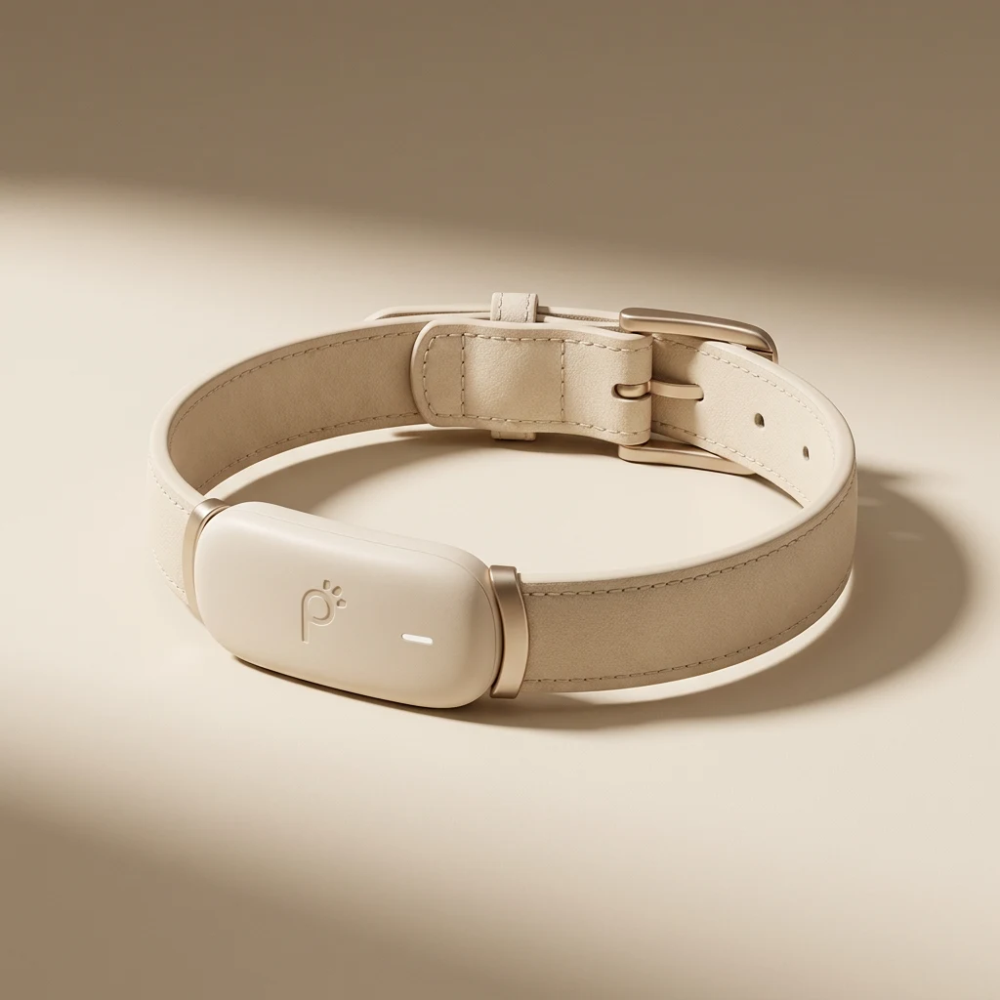

Amit Ashkenazi — Behind PawLink
PawLink began with a simple question: what if we could understand our dogs before they had to show us something was wrong?
I created PawLink to turn everyday health signals into a living connection between dogs and the people who love them — combining technology, real-time data, and thoughtful design to make their wellbeing easier to see, understand, and protect.
For me, technology becomes meaningful when complex information stops feeling like data and starts feeling understandable, intuitive, and alive.
I’m a full-stack developer with a background in visual communication and a strong interest in the space where technology, design, and human emotion meet.
I designed and developed PawLink as an end-to-end experience — from its real-time telemetry and health alerts to the interactive digital twin and the visual language surrounding them.
BUILT WITH
React · JavaScript · Node.js · Express · Supabase · PostgreSQL · Three.js · React Three Fiber
